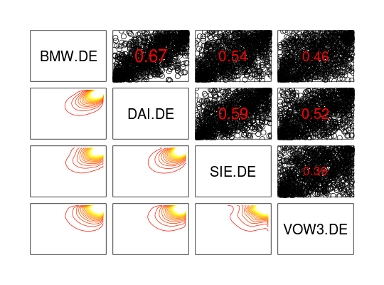
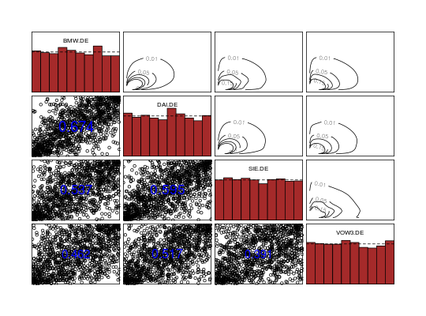

Pairs Plot of Copula Data
This function provides pair plots for copula data. Using default setting it plots bivariate contour plots on the lower panel, scatter plots and correlations on the upper panel and histograms on the diagonal panel.
# S3 method for copuladata pairs(x, labels = names(x), ..., lower.panel = lp.copuladata, upper.panel = up.copuladata, diag.panel = dp.copuladata, label.pos = 0.85, cex.labels = 1, gap = 0, method = "kendall", ccols = terrain.colors(11), margins = "norm")
Arguments
| x |
|
|---|---|
| labels | variable names/labels. |
| … | other graphical parameters (see |
| lower.panel | panel function to be used on the lower diagonal panels (if not supplied, a default function is used) |
| upper.panel | panel function to be used on the upper diagonal panels (if not supplied, a default function is used) |
| diag.panel | panel function to be used on the diagonal panels (if not supplied, a default function is used) |
| label.pos | y position of labels in the diagonal panel; default:
|
| cex.labels | magnification to be used for the labels of the diagonal
panel; default: |
| gap | distance between subplots, in margin lines; default: |
| method | a character string indicating which correlation coefficients
are computed. One of |
| ccols | colour to be used for the contour plots; default: |
| margins | character; margins for the contour plots. Options are:
|
Note
If the default panel functions are used
colchanges only the colour of the points in the scatter plot (upper.panel)cexchanges only the magnification of the points in the scatter plot (upper.panel)
See also
pairs, as.copuladata,
BiCopKDE
Examples
data(daxreturns) data <- as.copuladata(daxreturns) sel <- c(4,5,14,15) ## pairs plot with default settings pairs(data[sel])## pairs plot with custom settings nlevels <- 20 pairs(data[sel], cex = 2, pch = 1, col = "black", diag.panel = NULL, label.pos = 0.5, cex.labels = 2.5, gap = 1, method = "pearson", ccols = heat.colors(nlevels), margins = "flexp")## pairs plot with own panel functions up <- function(x, y) { # upper panel: empirical contour plot op <- par(usr = c(-3, 3, -3, 3), new = TRUE) BiCopKDE(x, y, levels = c(0.01, 0.05, 0.1, 0.15, 0.2), margins = "exp", axes = FALSE) on.exit(par(op)) } lp <- function(x, y) { # lower panel: scatter plot (copula data) and correlation op <- par(usr = c(0, 1, 0, 1), new = TRUE) points(x, y, pch = 1, col = "black") r <- cor(x, y, method = "spearman") # Spearman's rho txt <- format(x = r, digits = 3, nsmall = 3)[1] text(x = 0.5, y = 0.5, labels = txt, cex = 1 + abs(r) * 2, col = "blue") on.exit(par(op)) } dp <- function(x) { # diagonal panel: histograms (copula data) op <- par(usr = c(0, 1, 0, 1.5), new = TRUE) hist(x, freq = FALSE, add = TRUE, col = "brown", border = "black", main = "") abline(h = 1, col = "black", lty = 2) on.exit(par(op)) } nlevels <- 20 pairs(data[sel], lower.panel = lp, upper.panel = up, diag.panel = dp, gap = 0.5)